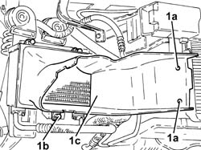
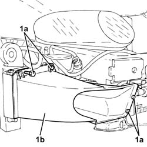

1084C40 CONVOGLIATORE ARIA PER RADIATORE RAFFREDDAMENTO OLIO MOTORE - S.R.
- Path
- Procedures > 10 ENGINE UNIT > 1084 ENGINE LUBRICATION SYSTEM > 1084C ENGINE OIL COOLING CIRCUIT > 1084C40 CONVOGLIATORE ARIA PER RADIATORE RAFFREDDAMENTO OLIO MOTORE - S.R.
- Kind
- repair procedure (removal / refitting; the operation number is the code)
- Applies to
- engines: 3.2 V6, 1.9 JTD 16V; all production periods
- Interactive page
- https://sloeber94.github.io/elrnDB-aGt/en/#/125001170
Applies to: engines: 3.2 V6; all production periods
 Removing
Removing
 Refitting
RefittingPosition the vehicle on the ramp
Proceed with removal
Op. 7055B54 UNDER-ENGINE GUARD - R R
Proceed with removal
Proceed with removal
Op. 7055B64 LH OR RH REFLECTOR(ONE) ON REAR BUMPERS - R R
Proceed with removal
1. Release the buttons (1a), undo the bolts (1b) and remove the engine oil cooling radiator air duct (1c).
Op. 7055B42 LH OR RH REFLECTOR(ONE) ON REAR BUMPERS - R R

Applies to: engines: 3.2 V6; all production periods
Refitting
RemovingPlace the engine oil cooling radiator air duct back in its housing, then fasten it using the bolts and the buttons.
Proceed with refitting
Op. 7210E10 R.R. FRONT BUMPER.
Proceed with refitting
Op. 7055B42 LH OR RH REFLECTOR(ONE) ON REAR BUMPERS - R R.
Proceed with refitting
Op. 7055B64 LH OR RH REFLECTOR(ONE) ON REAR BUMPERS - R R.
Proceed with refitting
Op. 7055B54 UNDER-ENGINE GUARD - R R.
Remove the car from the ramps.
Applies to: engines: 1.9 JTD 16V; all production periods
Removing
RefittingPosition the vehicle on the ramp
Proceed with removal
Op. 7055B54 UNDER-ENGINE GUARD - R R
Proceed with removal
1. Undo the bolts (1a) and remove the engine oil cooling radiator air duct (1b).

Applies to: engines: 1.9 JTD 16V; all production periods
Refitting
RemovingFit the engine oil cooling radiator air duct in its seating and secure it with its bolts.
Proceed with refitting
Op. 7210E10 R.R. FRONT BUMPER.
Proceed with refitting
Op. 7055B54 UNDER-ENGINE GUARD - R R.
Remove the car from the ramps.
Topics linked from this page (4)
- 7055B42 LH OR RH REFLECTOR(ONE) ON REAR BUMPERS - R R
- 7055B54 UNDER-ENGINE GUARD - R R
- 7055B64 LH OR RH REFLECTOR(ONE) ON REAR BUMPERS - R R
- 7210E10 R.R. FRONT BUMPER
Topics that link to this page (7)
- 1004B10 POWER UNIT WITH MANUAL GEARBOX - R + R
- 1084C34 ENGINE OIL COOLING RADIATOR - R + R
- 1084C36 ENGINE OIL COOLING RADIATOR SUPPORT BRACKET - R + R
- 1088B20 ENGINE COOLING RADIATOR - R + R
- 4130B49 RETURN PIPE FROM POWER STEERING CASE TO HEAT EXCHANGER PIPE R R
- 4130B52 HEAT EXCHANGER PIPE - R+R
- 4130B54 RETURN PIPE FROM HEAT EXCHANGER PIPE TO POWER STEERING FLUID RESEVIOR R R